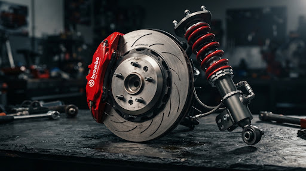
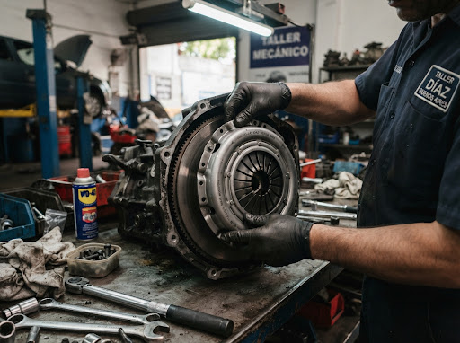
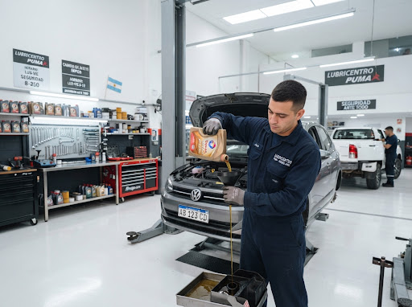

Frenos y embragues en Villa Crespo.
Sin vueltas.
Diagnóstico honesto, repuestos de primera línea y presupuesto claro antes de desarmar. Cuidamos la seguridad de tu auto en el corazón del barrio.

Freno Seguro
= VTV Aprobada sin fallas
Especialistas Únicos
Dedicados 100% a sistema de frenos y transmisión por embrague. Nada de improvisar en tren rodante.
Diagnóstico Sin Cargo
Subimos el auto al elevador y revisamos el desgaste en 15 minutos sin costo. Mirás la pieza con nosotros.
Primeras Marcas
Bosch, Fras-le, Litton, Valeo, LuK, Brembo, Corven y fluidos homologados por norma IRAM/DOT4.
Garantía Escrita
Cada recambio, centrado y rectificación cuenta con respaldo total de taller y prueba en banco dinámico.
Servicios de Taller & Rectificación
Precios transparentes y repuestos originales o alternativos premium según tu necesidad y modelo vehicular.
Pastillas de Freno
Cambio de pastillas delanteras y traseras con limpieza de cáliper, lubricación de pernos guía con grasa sintética para alta temperatura y purgado de seguridad.
Discos y Rectificación
Medición con micrómetro micrométrico digital, rectificado paralelo en torno o recambio por discos nuevos ventilados, macizos o ranurados con balanceo estático.
Kit de Embrague Completo
Placa de presión, disco de fricción y crapodina / rulemán de empuje (LuK / Valeo), centrado con vástago cónico y purgado integral de circuito hidráulico.
Líquido y Purgado DOT4
Drenado computarizado por presión neumática, extracción de sedimentos y burbujas de aire, reemplazo total de fluido DOT3/DOT4 de alta temperatura de ebullición.
Tambores, Cintas y Cilindros
Rectificación micrométrica de tambores traseros, cambio de cintas de freno vulcanizadas, reemplazo de bombines con fuga de retén y regulación de freno de mano.
Chequeo Integral Pre-VTV
Prueba en fosa técnica de fuerza y eficacia de frenado, desbalanceo porcentual por eje, estado de flexibles de goma y tensión del cable de estacionamiento.
¿Qué le pasa a tu auto?
Tocá los síntomas que notás al manejar. Nuestro cotizador te indica la urgencia técnica y arma el mensaje listo para enviar directamente a nuestro WhatsApp para coordinar el ingreso al taller.
Chilla al frenar
Pastillas en el testigo o material de fricción cristalizado.
Pedal esponjoso
El pedal baja hasta el fondo o se siente blando y elástico.
Vibra el volante
Sacudidas perceptibles en la dirección al apretar el freno.
Tira para un lado
Al frenar, el vehículo se desvía bruscamente hacia la izquierda o derecha.
Embrague patina
El motor se acelera pero el auto no tracciona proporcionalmente.
Cuestan los cambios
La primera y marcha atrás raspan o se traban con el motor en marcha.
Pedal muy duro
Excesiva resistencia en el pie izquierdo para desacoplar.
Olor a quemado
Olor agrio y humo visible en ruedas o campana de embrague.
Seleccioná uno o más síntomas para ver la evaluación técnica preliminar.
Estamos listos en nuestro taller de Villa Crespo para revisarlo en el elevador sin costo.
Cómo Trabajamos en Velasco
En nuestro taller no existen las sorpresas al momento de pagar. Te mostramos la pieza gastada, presupuestamos antes de accionar y te devolvemos las piezas reemplazadas.
Traelo y lo revisamos en la fosa
Subimos tu auto a los elevadores en Juan Ramírez de Velasco 1211. Miramos el estado real del sistema hidráulico, el espesor de pastillas y el juego del pedal frente a vos.
Presupuesto detallado por WhatsApp
Te enviamos fotos, videos del desgaste y el costo exacto de repuestos originales o alternativos más mano de obra antes de tocar un solo tornillo. Cero sorpresas.
Retirás en el día con garantía
Probamos el frenado y la suavidad del pedal en calle, te entregamos las cajas y repuestos viejos que fueron cambiados y tu certificado de garantía por escrito.

Centrado milimétrico para evitar vibraciones en el disco nuevo.

Instalaciones limpias y equipadas con instrumental de purgado a presión.
Opiniones de Nuestros Clientes
"Llevé el Corolla porque chillaba feo y en otro lado me querían cambiar todo el tren delantero. Acá me cambiaron las pastillas, rectificaron los discos y me cobraron exactamente lo acordado. Honestos de verdad."
Fernando C.
Vecino de Malabia · Toyota Corolla
"Me hicieron el embrague completo de una Kangoo de reparto en el día. El pedal quedó una seda, me mandaron videos del desgaste del disco viejo por WhatsApp antes de poner el nuevo LuK. Súper recomendables."
Mariana G.
Villa Crespo · Renault Kangoo
"Fui a hacer la revisión pre-VTV porque reboté por desbalance en el eje trasero. Cambiaron cilindros y cintas, purgaron todo y pasé la VTV al día siguiente sin observaciones. Excelentes muchachos."
Lucas B.
Parque Centenario · Fiat Palio
Vení al Taller
Estamos en una zona de fácil acceso desde Av. Juan B. Justo y Av. Corrientes. Podés dejar el auto por la mañana y retirarlo a la salida de tu trabajo.
Dirección
Juan Ramírez de Velasco 1211, Villa Crespo, CABA
(Entre Darwin y Humboldt)
Horarios de Fosa
Lunes a Viernes: 8:00 a 18:00 (Corrido)
Sábados: 8:00 a 13:00
Velasco Taller Mecánico
Juan Ramírez de Velasco 1211 (e/ Humboldt y Darwin).